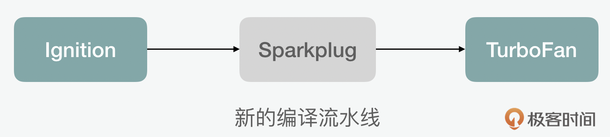

- 00 开篇词 JavaScript的进阶之路.md.html
- 01 函数式vs.面向对象：响应未知和不确定.md.html
- 02 如何通过闭包对象管理程序中状态的变化？.md.html
- 03 如何通过部分应用和柯里化让函数具象化？.md.html
- 04 如何通过组合、管道和reducer让函数抽象化？.md.html
- 05 map、reduce和monad如何围绕值进行操作？.md.html
- 06 如何通过模块化、异步和观察做到动态加载？.md.html
- 07 深入理解对象的私有和静态属性.md.html
- 08 深入理解继承、Delegation和组合.md.html
- 09 面向对象：通过词法作用域和调用点理解this绑定.md.html
- 10 JS有哪8种数据类型，你需要注意什么？.md.html
- 11 通过JS引擎的堆栈了解闭包原理.md.html
- 12 JS语义分析该用迭代还是递归？.md.html
- 13 JS引擎如何实现数组的稳定排序？.md.html
- 14 通过SparkPlug深入了解调用栈.md.html
- 15 如何通过哈希查找JS对象内存地址？.md.html
- 16 为什么环形队列适合做Node数据流缓存？.md.html
- 17 如何通过链表做LRU_LFU缓存？.md.html
- 18 TurboFan如何用图做JS编译优化？.md.html
- 19 通过树和图看如何在无序中找到路径和秩序.md.html
- 20 算法思想：JS中分治、贪心、回溯和动态规划.md.html
- 21 创建型：为什么说Redux可以替代单例状态管理.md.html
- 22 结构型：Vue.js如何通过代理实现响应式编程.md.html
- 23 结构型：通过jQuery看结构型模式.md.html
- 24 行为型：通过观察者、迭代器模式看JS异步回调.md.html
- 25 行为型：模版、策略和状态模式有什么区别？.md.html
- 26 特殊型：前端有哪些处理加载和渲染的特殊“模式”？.md.html
- 27 性能：如何理解JavaScript中的并行、并发？（上）.md.html
- 28 性能：如何理解JavaScript中的并行、并发？（下）.md.html
- 29 性能：通过Orinoco、Jank Busters看垃圾回收.md.html
- 30 网络：从HTTP_1到HTTP_3，你都需要了解什么？.md.html
- 31 安全：JS代码和程序都需要注意哪些安全问题？.md.html
- 32 测试（一）：开发到重构中的测试.md.html
- 33 测试（二）：功能性测试.md.html
- 34 测试（三）：非功能性测试.md.html
- 35 静态类型检查：ESLint语法规则和代码风格的检查.md.html
- 36 Flow：通过Flow类看JS的类型检查.md.html
- 37 包管理和分发：通过NPM做包的管理和分发.md.html
- 38 编译和打包：通过Webpack、Babel做编译和打包.md.html
- 39 语法扩展：通过JSX来做语法扩展.md.html
- 40 Polyfill：通过Polyfill让浏览器提供原生支持.md.html
- 41 微前端：从MVC贫血模式到DDD充血模式.md.html
- 42 大前端：通过一云多端搭建跨PC_移动的平台应用.md.html
- 43 元编程：通过Proxies和Reflect赋能元编程.md.html
- 结束语 JavaScript的未来之路：源于一个以终为始的初心.md.html
- 捐赠
14 通过SparkPlug深入了解调用栈
你好，我是石川。
在第11讲的时候，我们通过函数中的闭包了解了栈和堆这两种数据结构。在12讲中，我们通过递归了解了函数在调用栈中的循环执行。那么今天，我们再通过V8的Sparkplug编译器来深入的了解下JavaScript引擎中的调用栈，其中栈帧（stack frame），栈指针（stack pointer）和帧指针（frame pointer）的概念。

这里，可能有不太了解V8的同学，我们来简单看一下Sparkplug的前世今生。最开始的时候啊，V8用的是一个相对比较快的Full-codegen编译器生成未优化的代码，然后通过Crankshaft这个及时（JIT）编译器对代码进行优化和反优化。但是随着更多人浏览网页的习惯从PC端转向移动端，性能问题变得更加重要了。而这个流水线既没能对ES6之前的，也没能对ES6之后版本的JS做到理想的优化。
所以随之而来的，V8就引入了Ignition解释器和TurboFan的优化编译器以移动优先为目的的流水线。它最大的特点呢，就是通过Ignition最终生成字节码，之后再通过TurboFan生成优化后的代码，和做相关的反优化。
可是这个时候，问题又来了，TurboFan和Crankshaft比起来，有时也有不足。所以为了解决这个问题，V8又创建了一个把Full-codegen，Crankshaft，Ignition和TurboFan整合起来的“全家桶”的流水线。这显然让问题显得更复杂了。
还有就是从2016年开始，V8团队也从理论往实际转变，包括自研的Octane测试引擎都被真实场景的测试所取代了。并且努力在优化编译器外寻求性能优化方向，包括解析器、流、对象模型、垃圾回收器、编译代码缓存等方面的优化。然而在这个过程中，他们开始发现在优化解释器时遇到了比如字节码解码或分派这些成本的限制。基于V8的双编译器的模型，是没办法实现更快的分层代码优化的。如果想要提速，就只能删除一些优化关卡，但这样会降低峰值性能。运行的初始阶段在还没有稳定的对象隐藏类反馈的情况下，也没有办法开始优化。基于上面的种种原因和问题，Sparkplug就诞生了。作为非优化编译器，它存在于Ingition解释器和TurboFan优化编译器之间。
为什么多了一个编译器
既然Sparkplug的目的是快速编译，那么为了达到这个目的，它就用到了两个重要的方法。
首先，它编译的函数已经被编译为字节码了。字节码编译器已经完成了大部分复杂的工作，比如变量解析、判断括号是否是箭头函数、去掉语法糖和解构语句等等。Sparkplug的特点是从字节码而不是从JavaScript源代码编译，因此不必担心这些问题。这也是它和Full-codegen的区别。因为在Full-codegen的场景里，Crankshaft需要将源码重新解析到AST语法树来编译；并且为了反优化到Full-codegen，它需要重复Full-codegen编译来搞定栈帧。
第二个方法是Sparkplug不会像TurboFan那样生成任何中间码 (IR)。什么是IR呢？它是一种从抽象到具象的分层结构。在具象中可以对具体内容比如新的ES标准，或特定机器比如IBM、ARM或Intel做特殊的机器码生成。TurboFan用的是基于节点海思想的IR。TurboFan在接受到Ignition的指示后，会进行优化处理，并生成针对于平台的机器代码。相反，Sparkplug在字节码上的单次线性传递中直接编译为机器码，产出与该字节码执行相匹配的代码。所以事实上，整个Sparkplug编译器是一个for循环内的switch语句，分配到基于每个固定的字节码的机器码的生成函数上。
// Sparkplug 编译器的部分代码
for (; !iterator.done(); iterator.Advance()) {
VisitSingleBytecode();
}
IR的缺失意味着除了非常有限的窥孔优化外，Sparkplug的优化机会有限。这就是说因为它没有独立于架构的中间阶段，所以必须将整个实现分别移植到支持的每个架构中。但是实际上呢，这些都不是问题，因为Sparkplug是一个简单快速的编译器，所以代码很容易移植；而且因为在工作流中还是有TurboFan的，所以不需要进行大量优化。并且我们看到TurboFan的反优化会回到SparkPlug，而不是Ignition。
栈指针和帧指针的使用
下面我们就来看看栈帧的原理，还有栈指针和帧指针的使用。在成熟的JavaScript虚机中添加新的编译器其实很难。因为除了Sparkplug自身的功能，它还必须支持例如调试器、遍历堆栈的CPU分析器、栈的异常跟踪、分层的集成，及热循环到优化代码的栈替换（OSR，on-stack replacement）等工作。
那Sparkplug则用了一个比较聪明的方法，简化了大多数问题，就是它维护了“与解释器兼容的栈帧”。我们知道调用栈是代码执行存储函数状态的方式，而每当我们调用一个新函数时，它都会为该函数的本地变量创建一个新的栈帧。 栈帧由帧指针（标记其开始）和栈指针（标记其结束）定义。
当一个函数被调用时，返回地址也会被压入栈内的。返回地址在返回时由函数弹出，以便知道返回到哪里。当该函数创建一个新栈帧时，也会将旧的帧指针保存在栈中，并将新的帧指针设置为它自己栈帧的开头。因此，栈有一系列的帧指针 ，每个都标记指向前一个栈帧的开始。
除了函数的本地变量和回调地址外，栈中还会有传参和储值。参数（包括接收者）在调用函数之前以相反的顺序压入栈内，帧指针前面的几个栈槽是当前正在被调用的函数、上下文，以及传递的参数数量。这是“标准” JS 框架布局：
为了使我们在性能分析时，以最小的成本遍历栈，这种 JS 调用约定在优化和解释栈帧之间是共享的。
Ignition解释器会进一步让调用约定变得更加明确。Ignition是基于寄存器的解释器，和机器寄存器的不同在于它是一个虚拟寄存器。它的作用是存储解释器的当前状态，包括JavaScript函数局部变量（var/let/const 声明）和临时值。这些寄存器存储在解释器的栈帧中。除此以外，栈帧中还有一个指向正在执行的字节码数组的指针，以及当前字节码在该数组中的偏移量。
后来，V8团队对解释器栈帧做了一个小改动，就是Sparkplug在代码执行期间不再保留最新的字节码偏移量，改为了存储从Sparkplug代码地址范围到相应字节码偏移量的双向映射。因为Sparkplug代码是直接从字节码的线性遍历中发出的，所以这是一个相对简单的编码映射。每当栈帧访问并想知道Sparkplug栈帧的“字节码偏移量”时，都会在映射中查找当前正在执行的指令并返回相应的字节码偏移量。同样，每当它想从解释器到Sparkplug进行栈替换（OSR，on-stack replacement）时，都可以在映射中查找当前字节码偏移量，并跳转到相应的Sparkplug指令。
Sparkplug特意创建并维护与解释器相匹配的栈帧布局；每当解释器存储一个寄存器值时，Sparkplug也会存储一个。它这样做有几点好处，一是简化了Sparkplug的编译, Sparkplug可以只镜像解释器的行为，而不必保留从解释器寄存器到Sparkplug状态的映射。二是它还加快了编译速度，因为字节码编译器已经完成了寄存器分配的繁琐的工作。三是它与系统其余部分（如调试器、分析器）的集成是基本适配的。四是任何适用于解释器的栈替换（OSR，on-stack replacement）的逻辑都适用于Sparkplug；并且解释器和Sparkplug代码之间交换的栈帧转换成本几乎为零。
之前字节码偏移量空出来的位置，在栈帧上形成了一个未使用的插槽，这个栈槽被重新定义了目的，来缓存当前正在执行的函数的“反馈向量”；来存储在大多数操作中都需要被加载的对象结构的数据。因此Sparkplug栈帧最终是这个样子的：
Sparkplug实际的代码很少，基本工作就是内置模块调用和控制流。为什么会这样呢？因为JavaScript语义很复杂，即使是最简单的操作也需要大量代码。强制Sparkplug在每次编译时内联重新生成代码会明显增加编译时间，而且这样也会增加Sparkplug代码的内存消耗，并且V8必须为Sparkplug的一堆JavaScript功能重新实现代码生成，这也可能引起更多的错误和造成更大的安全暴露。因此，大多数Sparkplug代码是调用“内置模块”的，即嵌入在二进制文件中的小段的机器码，来完成实际的脏活累活儿。这些内置函数基本与解释器使用相同，或至少大部分共享。
这时你可能会产生一个疑问就是Sparkplug存在的意义，感觉它和解释器做几乎同样的工作。在许多方面，Sparkplug的确只是解释器执行的序列化，调用相同的内置功能并维护相同的栈帧。但尽管如此，它也是有价值的，因为它消除了或更严谨地说，预编译了那些无法消除的解释器成本，因为实际上，解释器影响了许多CPU优化。
例如操作符解码和下一个字节码调度。解释器从内存中动态读取静态操作符，导致CPU要么停止，要么推测值可能是什么；分派到下一个字节码需要成功的分支预测才能保持性能，即使推测和预测是正确的，仍然必须执行所有解码和分派代码，结果依然是用尽了各种缓冲区中的宝贵空间和缓存。尽管CPU用于机器码，但本身实际上就是一个解释器。从这个角度看，Sparkplug其实是一个从Ignition到CPU字节码的“转换器”，将函数从“模拟器”中转移到“本机”运行。
总结
通过今天对Sparkplug的讲解，我们在之前对栈这种数据结构的了解基础上，更多的了解了栈帧、栈针和帧指针的概念，同时也更多的了解了JS的编译流水线。感兴趣的同学也可以看看我在参考中提供的V8博客中的相关文章的链接，同时，这个网站也有很多的语言和编译原理的解释，从中我们也可以看到V8对性能极致优化的追求，也是很值得学习的资料。同时如果你对编译原理很感兴趣的话，也可以看看隔壁班宫文学老师的编译原理课。
思考题
在前面我们说过，Sparkplug并不是完全没有优化，它也会做窥孔优化。你知道这个优化的原理吗？
期待在留言区看到你的分享，我们一起交流讨论。另外，也欢迎你把今天的内容分享给更多的朋友。我们下期再见！
参考
- V8 博客：https://v8.dev/blog/sparkplug
- 隔壁班宫文学老师的课程：《编译原理之美》
© 2019 - 2023 Liangliang Lee. Powered by gin and hexo-theme-book.